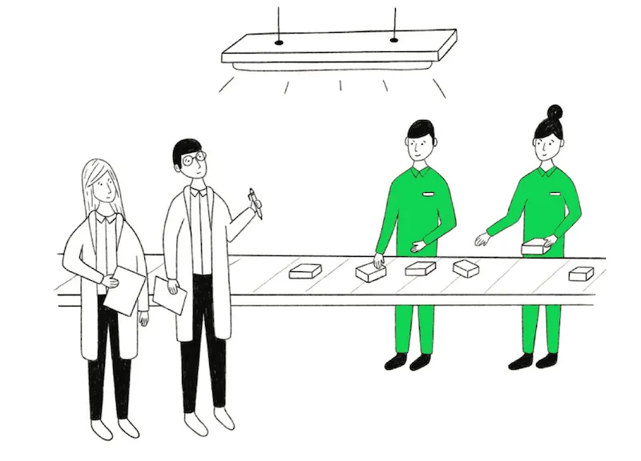
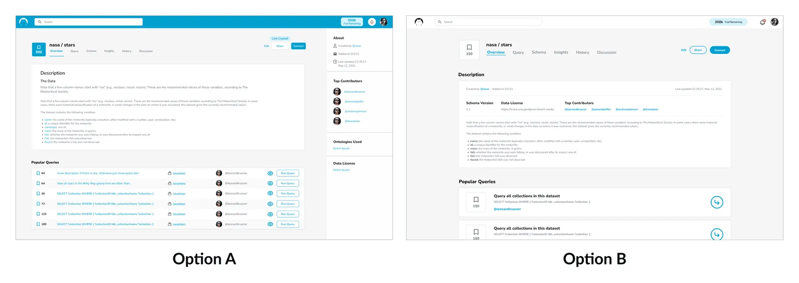

How Hacking Psychology Can Make You a Better Usability Tester
You probably know that usability testing is a must-have before launching the production of a digital product, app or website, but did you know that you could be sabotaging your own results? To prevent that, you should learn a few common mistakes that tend to occur during usability testing and how you can hack cognitive psychology to get more accurate results from your testers.

In this article, you'll discover how big of a role psychology plays in usability testing today, the ways that psychology experiments are very similar to usability testing, and how being aware of various biases can make you a better tester.
Common Methods of Usability Testing
Whether you’re a testing pro or this is your first time hearing about usability testing, let’s run through the basics, so you can better understand how psychology fits into all of this.
In short, usability testing is what you’re doing when you ask people to interact with your product and provide feedback. The goal of usability testing is to make sure that your users can easily use the product (it could be an app, a website, anything!) and to get useful feedback from either watching or listening to your users interact with your product. You may choose to guide your users through a particular set of actions to see if they do what you expect them to, or you may simply ask them to poke around and just observe their behavior and ask questions along the way.
Once you’ve decided what you want to test, you’ll need to decide how you want to conduct testing. There are a variety of methods, but the most common ones are moderated, remote-moderated, and remote-unmoderated testing.
Moderated testing
In moderated testing, you (the moderator) are in the room with your user as they use the product. Here, you have the opportunity to see precisely what the user is doing, what they’re clicking on, and how they’re navigating through the design. This type of testing is great because you can also ask questions, guide the user through a set of steps, and jot down their feedback, providing you with a holistic view of the user’s experience. On the other hand, moderated testing can be fairly costly and time-consuming since it requires one-on-one interactions with users, which you also need to procure, and sometimes that’s easier said than done.
Remote-moderated testing
Remote-moderated testing also allows you to see, interact with, and hear from your users. However, all of your testing is done remotely without them in the room with you. In this type of testing, you may choose to use video conferencing with screen-sharing capabilities, so you can communicate with your users while also being able to see what they’re clicking on and interacting with. This style of testing is great if you don’t have a facility where you can bring your testers, or if you want to reach users who live outside of the town where you’re located. The set-up might be a bit more complicated, and you’ll still have to go out and find users, but this is a very viable and low-cost option for lots of testers.
Remote-unmoderated testing
Finally, remote-unmoderated testing is the best option if you want your users to come to you instead of having to go out and find them. Remote-unmoderated testing requires software that tracks your users’ interactions without them knowing and gathers the data into a report for you to analyze.
Typically, this kind of software records when a user clicks on a part of your website/app, how far down the page they scroll, where their mouse moves on the page, and how long they spend viewing certain parts of a page. The report compiles all of the user data for a defined time period (say a week) and delivers a “heat map”, which shows you the most popular (and unpopular) parts of the app/web page for you to then analyze.
The biggest downside to this method of testing a design is that you have to make assumptions about the user experience based on limited data. For example, you might see in your heat map that users are frequently clicking on the search bar. Does that mean that they find the search bar very helpful, that your users prefer the search bar over scrolling, or that your site is so difficult to use that they resorted to using the search bar? Without actually getting feedback from your users, you may be able to make some good guesses, but you won’t be able to paint the entire picture of the user experience.
Now that you’ve graduated Usability Testing 101, let’s learn about the role psychology plays in ensuring quality test results.
Psychology and Usability Testing
For those of you who didn’t have to endure four years of psychology lectures, let me share with you that conducting a psychology experiment is nearly identical to the process of running a usability test. How so? Both require finding participants, asking them to perform certain actions, measuring the responses, recording feedback, and analyzing the results.
As a tester, you can steal the most important parts of experimental methodology and implement it in your own usability tests. No need to reinvent the wheel! In fact, you can even (and should) apply the scientific method when conducting testing as you would with a psychology experiment, so you have a replicable and reliable testing method you can use each time you ask a user to go through your usability flow. This makes analyzing the data much simpler and standardized and also helps you make informed decisions about what you should change about your product once you’ve finished collecting your data.
The two main differences between testing and experimentation revolve around what happens once the data is analyzed. In the psychology community, experimenters write up white papers to share their findings with others, so that other psychologists can replicate the study and (hopefully) find the same results. This isn’t the case in the technology community, where our main goal is to iterate on our findings, so we can improve the product and create something our users love using!
Unfortunately, psychology and usability testing also share a significant issue: cognitive biases. A cognitive bias is an error in thinking that occurs when people are processing and interpretinginformation in the world around them. A lot of the time these biases are great and help us quickly make sense of our surroundings. However, these can also cause problems when we’re trying to get high quality, clean data that we can use to make informed decisions.
Additionally, cognitive biases may present themselves in different ways depending on the user, since no two people share the same life experiences, backgrounds, beliefs, and perspectives. In psychology, you’re taught that you can never completely remove the presence of a bias, but taking steps to reduce its effect can make all the difference in the quality of your results.
Next, you’ll learn some of the most common cognitive biases I’ve experienced in usability testing and what you can do to overcome them.
Common Cognitive Biases in Usability Testing
The Hawthorne Effect
Back in the 1920s and 30s a now-famous psychology experiment was being conducted. A factory outside Chicago called Hawthorne Works hired a team of psychologists to test whether or not different lighting conditions would have any impact on workers’ productivity. The psychologists experimented with both very bright and very dim lighting and noticed that in both cases productivity went up, even when the lighting was as dim as candlelight. Other work conditions were changed as well, such as adding breaks or providing food, which also led to an increase in productivity.

https://www.geckoboard.com/resources/statistical-fallacies/#hawthorne-effect
Later it was found that it wasn’t the specific conditions that led to the change in productivity, but rather the introduction of a new condition (even if it was just going back to the original condition) plus the knowledge of being watched by the psychologists/supervisors that created the short-lived productivity. We now refer to this change in behaviour when you know you’re being watched as the Hawthorne Effect, or Observer Effect.
As you can imagine, this might cause some problems when conducting moderated testing. In usability testing, it’s critical that we tap into the true experience of our users so we understand their pain points, as well as the features they love and enjoy using. When users display the Hawthorne Effect, their data becomes compromised and they may alter their behaviour because they know they’re being watched.
For some users, that may mean that they interact with your product in a way that’s unnatural for them. During one testing session, I asked a user to poke around a website I designed and find a specific piece of information. I wanted to see the path they took to get to the information and see if it matched my hypothesis about the navigation. The user told me that they usually tried to find information on a web page by clicking through the menu items, but that for this site he wanted to try out the Cmd+F keyboard shortcut he recently learned for searching a page instead.
Of course, both methods are valid ways of finding information, but by changing the way he typically interacts with a site, I wasn’t able to get a sense of his usual interaction patterns.
In order to overcome the Hawthorne Effect and get more natural responses and feedback from your users, there are a few things you might consider:
Create a judgement-free zone
It’s important to create a judgement-free testing environment so that the user feels comfortable providing natural feedback. Do this by being friendly and warm with your users and by expressing to them that you’re testing the product, not them. Share with them that their feedback and interaction patterns are important for making the product great and that you’re not there to criticise or judge what they do.
Stay out of direct sight
When conducting moderated testing, do your best to “be invisible” when the user is interacting with your product. This helps the user forget that you’re observing them and helps them to relax and act more naturally. I like to do this by sitting slightly behind users and telling them that I’m just there if they have any questions and that I have some emails to catch up on. This is, of course, a white lie, but I’ve noticed that users tend to feel more at ease when they think I’m not watching over their shoulder.
Track behavior remotely
One way to eliminate the Hawthorne Effect is by conducting remote unmoderated tests. Try a tracking software like Hotjar or Crazy Egg to see how your users explore your site without you having to be in the same room.
The Ordering Effect
The ordering effect states that the order in which information is presented to the user can influence the user’s responses. For example, a study conducted by Miller & Krosnick found that the candidate listed first on a voting ballot received 2.5 percent more votes than other names on the list. This is important to user testing if you want the same user to test multiple versions of the same design/feature or if you’re asking participants to follow a series of steps in a specific order.

I once created two versions of a site that each featured a different menu and asked each user to try out both versions and share their preference. When four users chose the first version, I worried that they were experiencing an ordering effect that primed them to prefer the menu they initially learned to navigate. I decided to invert the page order for the next batch of users and fortunately found that they agreed with the first cohort. Had I not switched the order, I may have never known whether or not the data I received was actually accurate or if an ordering effect had occurred instead.
Ways to overcome the ordering effect:
Change up the order in which you present information
Alternating the order that you present designs/information/questions to your users in can help minimize ordering effects and help neutralize your data, especially if all of your users are seeing multiple versions of a design.
Try A/B testing
Instead of presenting multiple designs in series, split your users into equal groups and give them each a design to interact with. By presenting only one option, you’re limiting their exposure to the ordering effect and allowing them to focus their efforts.
The Social Desirability Effect
The third cognitive bias I often see in usability testing is the social desirability effect. This bias emphasizes that people naturally want to respond in a way that is favorable to the other person. In testing, this becomes very common when we ask a user to share negative feedback — to talk about the things they don’t like about your product. While some users have no issue telling you all the things they hate about what you’ve created, others feel pressure to stay positive to avoid hurting your feelings.
I’ve asked friends and coworkers for feedback in the past and, while it was great hearing their positive comments about the parts they loved, I felt frustrated that I wasn’t able to get them to share much criticism (which is what takes your product from good to great!). Now, when I ask users to share feedback, I use these techniques to get both positive and negative responses:
Avoid leading questions
Anyone who’s taken a psychology course or watched a bad TV interview can tell you that leading questions are always something to avoid. In order to get quality data, we need to be sure that we’re not influencing our users’ responses. Instead of asking questions like, “How easy was it to find that information?” which implies that the task was supposed to be easy, ask more specific questions such as, “What would you expect to happen if you clicked that button?” Also, if your user is on a roll and sharing helpful insights, don’t be afraid to say, “Tell me more about that,” and encourage them to continue sharing their thoughts.
Prevent one-word answers
One of the worst parts of usability testing is getting stuck with a user who is shy to share feedback and responds with one-word answers to your questions. Prevent this by asking open-ended questions that encourage the user to respond more freely. For example, avoid questions like, “Is this feature something you would use?” which promotes a one-word response and try instead asking, ”Which feature could you see yourself using (or not using) in this app?”
Be mindful of non-verbal communication
Receiving negative feedback isn’t easy, and your users know that. Encourage both their positive and negative feedback by staying friendly and ensuring that you’re not unintentionally conveying dissatisfaction through your body language. If you tend to frown, cross your arms, or roll your eyes when receiving feedback or when your user isn’t interacting with your product in the way you had hoped, they’ll pick up on that negativity. Then, they’ll only share positive feedback or, even worse, shut down and become shy towards sharing their user experience. Remember, the goal of usability testing is to make your product better through quality user feedback, so the more of it you can get, both positive and negative, the better.
Conclusion
You don’t have to be a psychologist to apply psychological techniques to your usability testing strategy. By following these techniques, you can simplify your testing methods and yield more accurate data, which will lead to a better overall product. While this article explores three of the most common cognitive biases, there are many others that impact testing and knowing how to counter them can greatly benefit your testing results. If you’re interested in learning more about other biases, I encourage you to check out functional fixedness (difficulty seeing different ways something could be used), the recency effect (demonstrates the importance of getting feedback throughout the testing process rather than just at the end), and the observer-expectancy effect (how your own biases may be influencing your users).
The next time you run a user test, I hope that you think like a psychologist by choosing your testing method wisely, following the scientific method, considering likely cognitive biases, and developing a plan for countering them in your results.